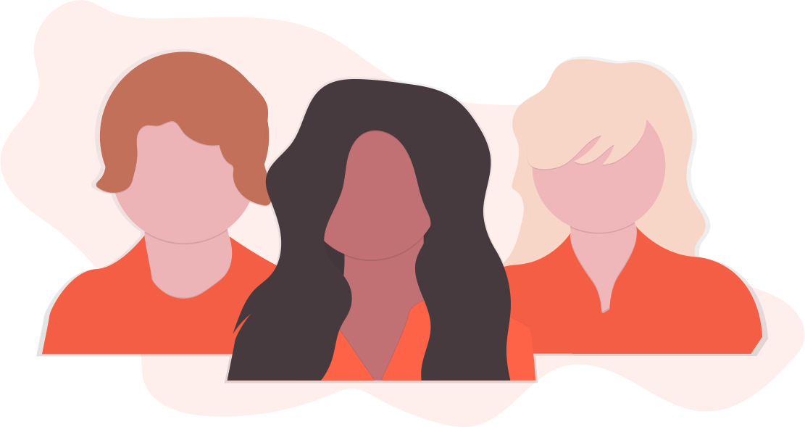
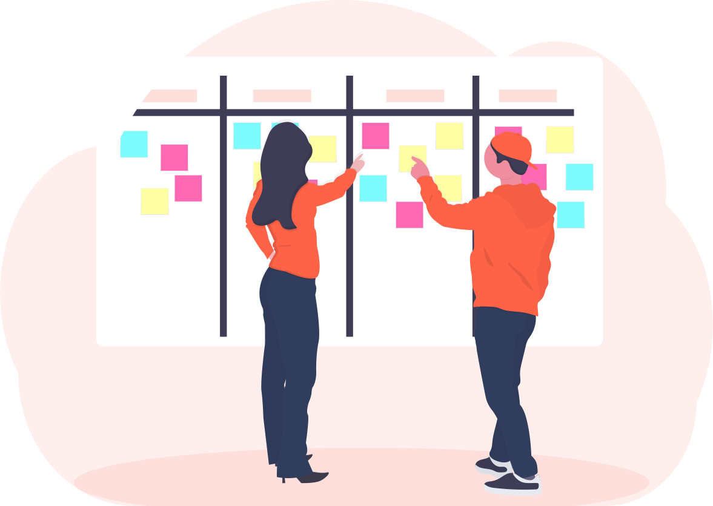
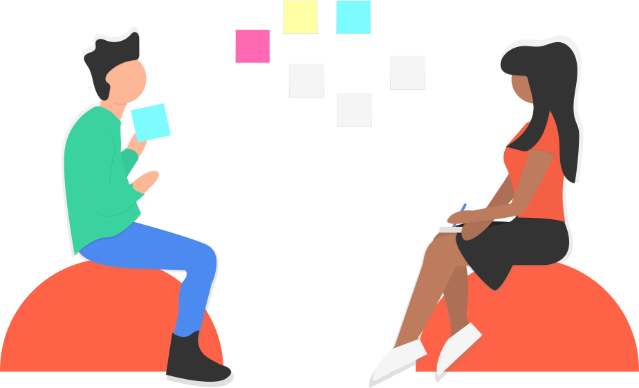

Das ARABUES im Überblick
Warum gibt es unser Bündnis?
Das Antirassistische Bündnis Stormarn (ARABUES) gründete sich am 27.10.2009 wegen massiv ansteigender
rechtsradikalen Aktivitäten und Tendenzen in Stormarn
Unsere Aufgabe
Wir sehen es als unsere Aufgabe an, über neue nationalistische Strömungen in unserer Umgebung
aufzuklären und diesen als vielfältige Gemeinschaft entgegen zu wirken.
Für uns darf sich die deutsche Geschichte nicht wiederholen und Faschismus und Rassismus darf keine
Akzeptanz in der Gesellschaft finden!
Wir wollen ein buntes Stormarn!
Gegenseitige Informationen
- Es gibt über jedes Treffen ein Ergebnisprotokoll.
- Es gibt einen E-Mail-Verteiler über den Protokolle und Entwürfe verschickt werden.
- Es gibt eine Homepage und einen Blog.
- Es gibt SprecherInnen.
Gegen Vereinsstruktur
Druch diese Entscheidung gibts es keine Satzung und keinen Vrostand.
Entscheidungen werden im Konsens getroffen.
Wir bemühen uns, einander mit der Intensität der Anliegen und den Grenzen zu verstehen und einmütige
Entscheidungen herbeizuführen.
Über uns
Wer wir sind
Unser offenes Bündnis setzt sich aus Vertreter*innen von Organisationen, demokratischen Parteien und
interessierten Einzelpersonen zusammen - alle Altersgruppen sind vertreten.
Wir sehen es als unsere Aufgabe an, über neue nationalistische Strömungen in unserer Umgebung
aufzuklären und diesen als vielfältige Gemeinschaft entgegen zu wirken.


Regelmäßige Treffen
Das Arabues trifft sich in regelmäßigen Abständen.
Bei diesen Treffen wird Protokoll geführt, welches Du danach Online nachlesen kannst.
Unsere Treffen finden wöchentlich statt und jede/r ist herzlich dazu eingeladen.
Entscheidungen im Konsens
Wir wissen um die unterschiedlichen Zugänge und Kulturen der Aktiven.
Von daher bemühen wir uns, einander mit der Intensität der Anliegen und den Grenzen zu verstehen und
einmütige Entscheidungen herbeizuführen.

Für den Newsletter anmelden
Die von Ihnen hier erhobenen Daten werden von ARABUES zur Bearbeitung Ihrer Anfrage verarbeitet.
Weitere Informationen entnehmen Sie bitte folgendem Link:
Datenschutzerklärung